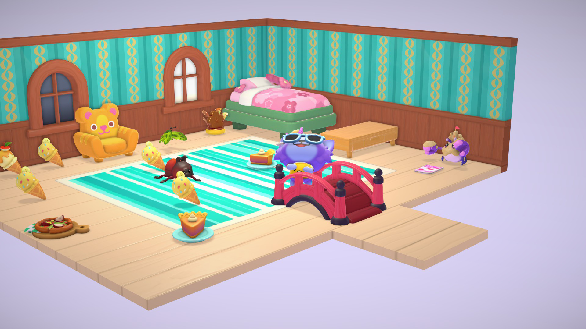
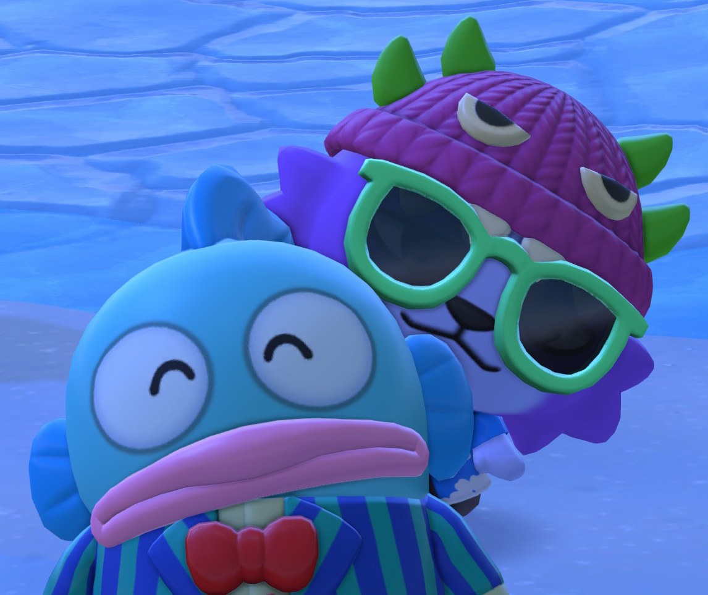

II bought Hello Kitty Island Adventure, y'all. A while ago. I say "a while", but I bought it on March 20th, less than 3 weeks ago. But jesus christ! I've been Animal Crossing Pocket Camping as my dailies driver, and, I mean. Hello Kitty Island Adventure is just Pocket Camp but an actual game. I'm transforming into Butters as we speak, it's, it's peam. It's peaj!

My beautiful home design chops 🏡
Every fucking day, I'm thinking "I need to play Hello Kitty Island Adventure". It turns 1AM and I'm like "oh boy, my dailies have reset!". I've not missed a single day! I know the names of every Hello Kitty character now! I saw a Hello Kitty with a yellow bow and I was like "that's not fucking Mimmy because her bow is on the left side of her face (the viewer's right) and Mimmy's is always on the right." Who the hell is Wish Me Mell and why doesn't she want to be my best friend?
I'm in an interpersonal communication class at Minneapolis College this semester, and we have to interview all of our classmates (which is the cumulative final project), and, fuckin', the past 3 interviews I've asked everybody what their favorite Hello Kitty character is. It's what comes to my mind! I've got Hello Kitty on the mind! There was this cute guy ahead of me in line at the coffee shop in Minneapolis College in the morning, and he was wearing a Keroppi shirt, and I was like "yo, I love your shirt! Keroppi rocks!" and then we talked for a bit. A not insignificant part about Hello Kitty Island Adventure And... it turns out he works at the Academic Resource Center as a peer tutor, the place I had an actual job interview at later that week. And I got the job! So. That's cray cray, right?

Hangyodon and I 🥺
Part-time English 1111 tutor job here I come. It's not too much to interfere with Island Off Outer Darkness - which is progressing slowly but surely. I finished the first beta build, which was very exciting. Gotta continue grinding it out.